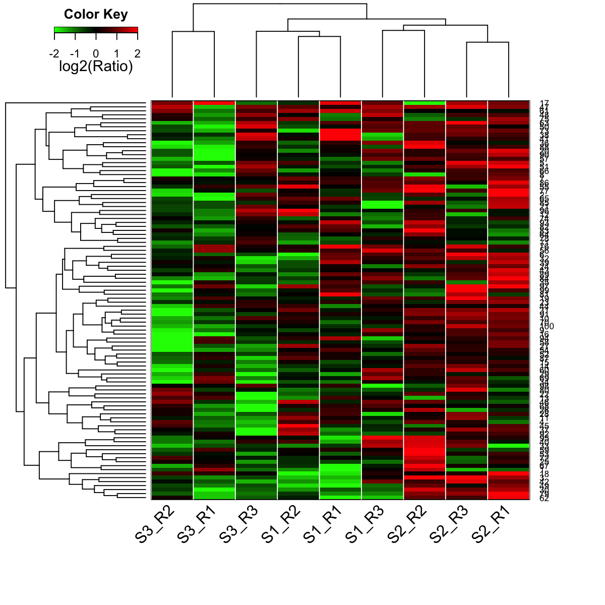
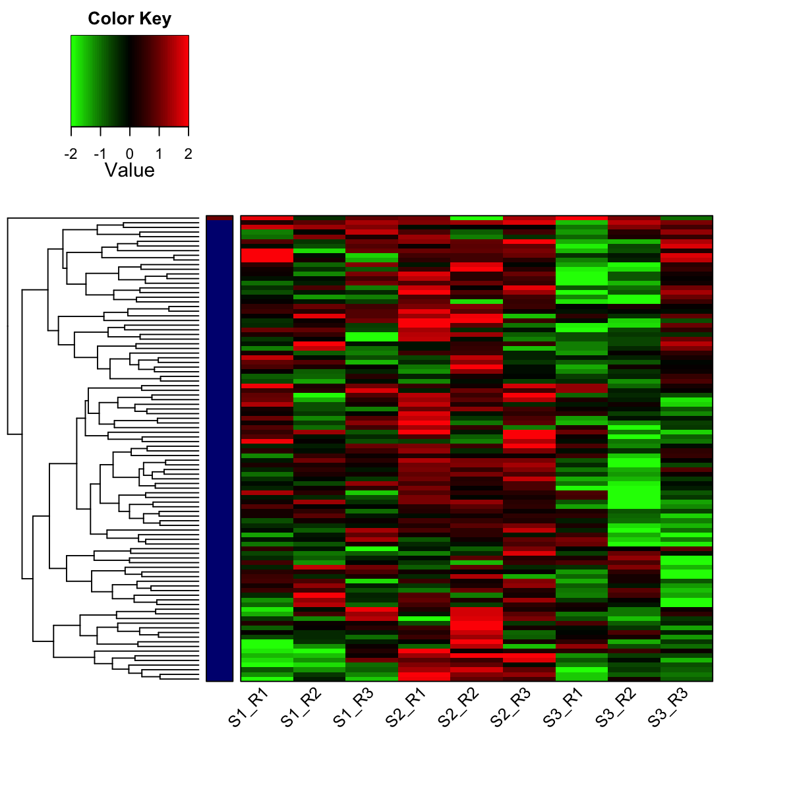

Description
visHeatmapAdv is supposed to visualise input data
matrix using advanced heatmap. It allows for adding
multiple sidecolors in both columns and rows. Besides,
the sidecolor can be automatically added via cutting
histogram into groups.
Usage
visHeatmapAdv(data, scale = c("none", "row", "column"), Rowv = T, Colv = T, dendrogram = c("both",
"row", "column", "none"), dist.metric = c("euclidean", "pearson", "spearman",
"kendall", "manhattan", "cos", "mi"), linkage.method = c("complete", "ward",
"single", "average", "mcquitty", "median", "centroid"), colormap = c("bwr", "jet",
"gbr", "wyr", "br", "yr", "rainbow", "wb"), ncolors = 64, zlim = NULL, RowSideColors = NULL,
row.cutree = NULL, row.colormap = c("jet"), ColSideColors = NULL, column.cutree = NULL,
column.colormap = c("jet"), ...)
Arguments
- data
- an input gene-sample data matrix used for
heatmap
- scale
- a character indicating when the input matrix
should be centered and scaled. It can be one of "none"
(no scaling), "row" (being scaled in the row direction),
"column" (being scaled in the column direction)
- Rowv
- determines if and how the row dendrogram
should be reordered. By default, it is TRUE, which
implies dendrogram is computed and reordered based on row
means. If NULL or FALSE, then no dendrogram is computed
and no reordering is done. If a dendrogram, then it is
used "as-is", ie without any reordering. If a vector of
integers, then dendrogram is computed and reordered based
on the order of the vector
- Colv
- determines if and how the column dendrogram
should be reordered. Has the options as the Rowv argument
above and additionally when x is a square matrix, Colv =
"Rowv" means that columns should be treated identically
to the rows
- dendrogram
- character string indicating whether to
draw 'none', 'row', 'column' or 'both' dendrograms.
Defaults to 'both'. However, if Rowv (or Colv) is FALSE
or NULL and dendrogram is 'both', then a warning is
issued and Rowv (or Colv) arguments are honoured
- dist.metric
- distance metric used to calculate the
distance metric between columns (or rows). It can be one
of "none" (i.e. no dendrogram between rows), "pearson",
"spearman", "kendall", "euclidean", "manhattan", "cos"
and "mi". See details at
http://suprahex.r-forge.r-project.org/sDistance.html
- linkage.method
- the agglomeration method used to
cluster/linkages columns (or rows). This should be one of
"ward", "single", "complete", "average", "mcquitty",
"median" or "centroid". See 'Note' below for details
- colormap
- short name for the colormap. It can be
one of "jet" (jet colormap), "bwr" (blue-white-red
colormap), "gbr" (green-black-red colormap), "wyr"
(white-yellow-red colormap), "br" (black-red colormap),
"yr" (yellow-red colormap), "wb" (white-black colormap),
and "rainbow" (rainbow colormap, that is,
red-yellow-green-cyan-blue-magenta). Alternatively, any
hyphen-separated HTML color names, e.g.
"blue-black-yellow", "royalblue-white-sandybrown",
"darkgreen-white-darkviolet". A list of standard color
names can be found in
http://html-color-codes.info/color-names
- ncolors
- the number of colors specified over the
colormap
- zlim
- the minimum and maximum z/patttern values for
which colors should be plotted, defaulting to the range
of the finite values of z. Each of the given colors will
be used to color an equispaced interval of this range.
The midpoints of the intervals cover the range, so that
values just outside the range will be plotted
- RowSideColors
- NULL or a matrix of "numRowsidebars"
X nrow(x), where "numRowsidebars" stands for the number
of sidebars annotating rows of x. This matrix contains
the color names for vertical sidebars. By default, it
sets to NULL. In this case, sidebars in rows can still be
enabled by cutting the row dendrogram into several
clusters (see the next two parameters)
- row.cutree
- an integer scalar specifying the
desired number of groups being cut from the row
dendrogram. Note, this optional is only enabled when the
ColSideColors is NULL
- row.colormap
- short name for the colormap to
color-code the row groups (i.e. sidebar colors used to
annotate the rows)
- ColSideColors
- NULL or a matrix of ncol(x) X
"numColsidebars", where "numColsidebars" stands for the
number of sidebars annotating the columns of x. This
matrix contains the color names for horizontal sidebars.
By default, it sets to NULL. In this case, sidebars in
columns can still be enabled by cutting the column
dendrogram into several clusters (see the next two
parameters)
- column.cutree
- an integer scalar specifying the
desired number of groups being cut from the column
dendrogram. Note, this optional is only enabled when the
column dengrogram is built
- column.colormap
- short name for the colormap to
color-code the column groups (i.e. sidebar colors used to
annotate the columns)
- ...
- additional graphic parameters. For the
complete list of parameters, please refer to
http://www.inside-r.org/packages/cran/gplots/docs/heatmap.2.
Note
The clustering/linkage methods are provided:
- "ward": Ward's minimum variance method aims at
finding compact, spherical clusters
- "single": The
single linkage method (which is closely related to the
minimal spanning tree) adopts a 'friends of friends'
clustering strategy
- "complete": The complete
linkage method finds similar clusters
- "average","mcquitty","median","centroid": These
methods can be regarded as aiming for clusters with
characteristics somewhere between the single and complete
link methods. Two methods "median" and "centroid" are not
leading to a monotone distance measure, or equivalently
the resulting dendrograms can have so called inversions
(which are hard to interpret)
Examples
# 1) generate data with three different distributions, each with an iid normal random matrix of 100 x 3
data <- cbind(matrix(rnorm(100*3,mean=0,sd=1), nrow=100, ncol=3),
matrix(rnorm(100*3,mean=0.5,sd=1), nrow=100, ncol=3),
matrix(rnorm(100*3,mean=-0.5,sd=1), nrow=100, ncol=3))
colnames(data) <- c("S1_R1","S1_R2","S1_R3","S2_R1","S2_R2","S2_R3","S3_R1","S3_R2","S3_R3")
# 2) heatmap after clustering both rows and columns
# 2a) shown with row and column dendrograms
visHeatmapAdv(data, dendrogram="both", colormap="gbr", zlim=c(-2,2), add.expr=abline(v=(1:(ncol(data)+1))-0.5,col="white"), KeyValueName="log2(Ratio)", lmat=rbind(c(4,3), c(2,1)), lhei=c(1,5), lwid=c(1,3))

# 2b) shown with row dendrogram only
visHeatmapAdv(data, dendrogram="row", colormap="gbr", zlim=c(-2,2))
# 2c) shown with column dendrogram only
visHeatmapAdv(data, dendrogram="column", colormap="gbr", zlim=c(-2,2))
# 3) heatmap after only clustering rows (with 2 color-coded groups)
visHeatmapAdv(data, Colv=FALSE, colormap="gbr", zlim=c(-2,2), row.cutree=2, row.colormap="jet", labRow=NA)

# 4) prepare colors for the column sidebar
# color for stages (S1-S3)
stages <- sub("_.*","",colnames(data))
lvs <- unique(stages)
lvs_color <- visColormap(colormap="rainbow")(length(lvs))
col_stages <- sapply(stages, function(x) lvs_color[x==lvs])
# color for replicates (R1-R3)
replicates <- sub(".*_","",colnames(data))
lvs <- unique(replicates)
lvs_color <- visColormap(colormap="rainbow")(length(lvs))
col_replicates <- sapply(replicates, function(x) lvs_color[x==lvs])
# combine both color vectors
ColSideColors <- cbind(col_stages,col_replicates)
colnames(ColSideColors) <- c("Stages","Replicates")
# 5) heatmap without clustering on rows and columns but with the two sidebars in columns
visHeatmapAdv(data, Rowv=FALSE, Colv=FALSE, colormap="gbr", zlim=c(-2,2), density.info="density", tracecol="yellow", ColSideColors=ColSideColors)
){kind=link}
){kind=link}
){kind=link}
){kind=link}
){kind=link}